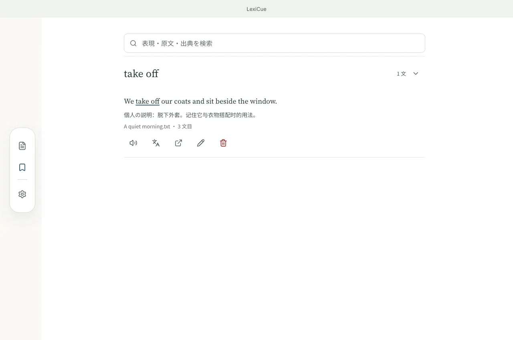
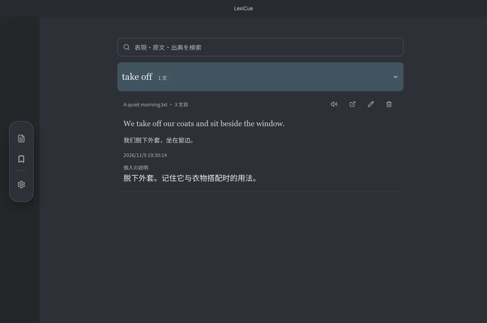

保存した文脈
「保存済み」は、表現、辞書の参照、出会った場所を一緒に保管します。
このページの目次
保存した表現を探す
「保存済み」で表現を検索し、各文脈を開きます。同じ表現に複数の元の文を残せます。



文脈を編集する
該当する記録のメモや説明を編集します。必要な文脈だけを削除し、表示された取り消しで戻せます。同じ表現の別の文脈は独立しています。
出典に戻る
文脈の出典から元の素材と文を開き、前の位置へ戻れます。元の素材がない場合も、保存された文脈は読めます。